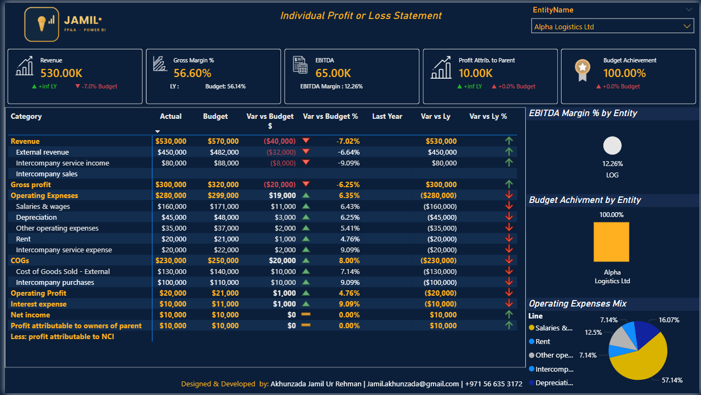
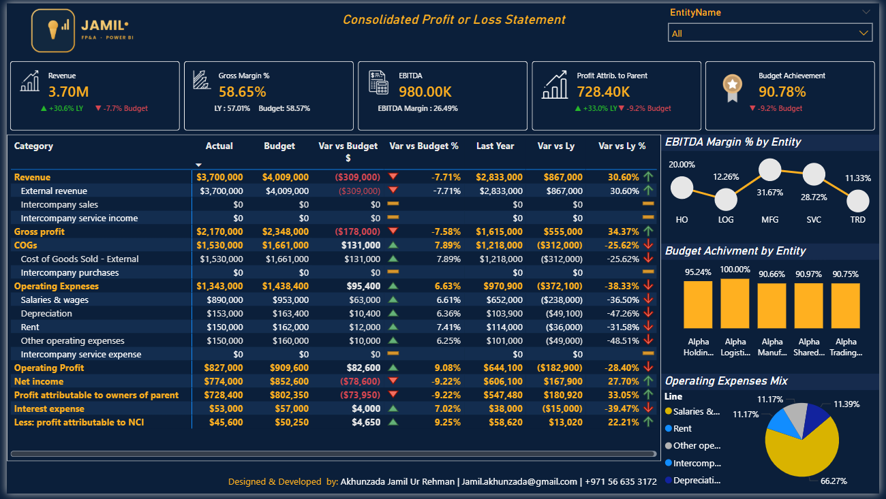
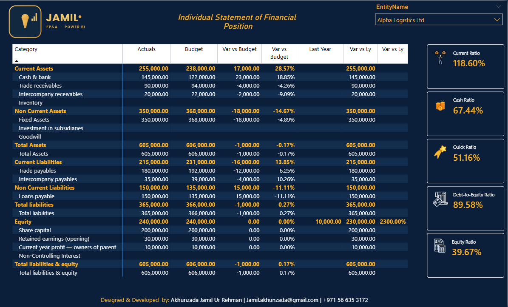
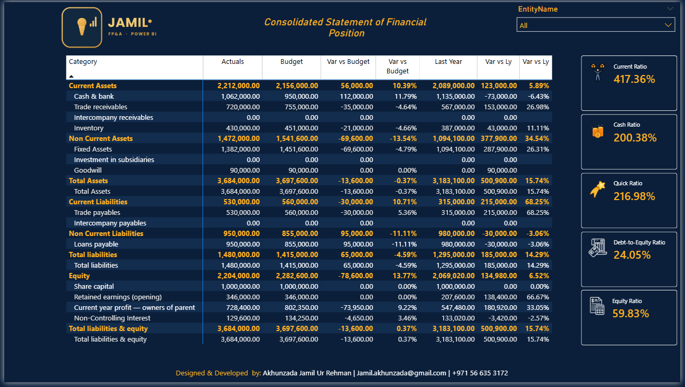
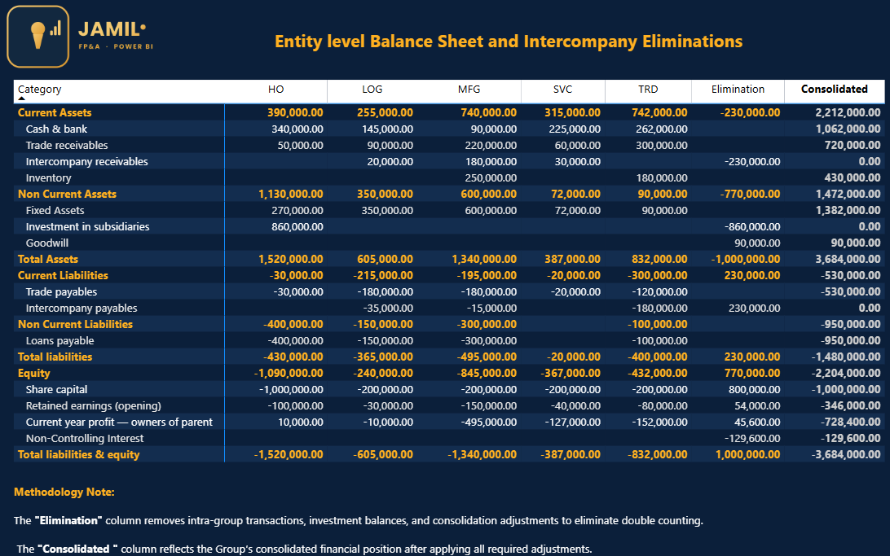

The report
What it looks like
Click any image to view it full size.
Executive summary

Profit & Loss: one entity vs the whole group


Balance Sheet: one entity vs the whole group


P&L consolidation bridge
Balance Sheet consolidation bridge
